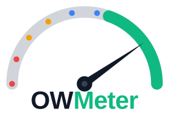

Escáner de seguridad web open-source
Owmeter permite a los propietarios de sitios web analizar su dominio frente al OWASP Top 10 — la lista oficial de las vulnerabilidades web más críticas — y recibir una puntuación de seguridad clara y accionable.

Owmeter permite a los propietarios de sitios web analizar su dominio frente al OWASP Top 10 — la lista oficial de las vulnerabilidades web más críticas — y recibir una puntuación de seguridad clara y accionable.
Cada vulnerabilidad encontrada incluye un botón "Fix with AI" que genera un prompt detallado listo para pegar en ChatGPT, Claude o cualquier IA. Incluye título, severidad, categoría OWASP, descripción, evidencia y pide código específico + guía paso a paso. También existe un botón que agrupa todos los issues a la vez, ordenados de más crítico a menos.
Antes de lanzar cualquier análisis, el usuario debe demostrar que es dueño del dominio. Esto impide que la herramienta se abuse para espiar webs de terceros.
El 90 % de los ataques web explotan vulnerabilidades bien conocidas y evitables, pero la mayoría de los desarrolladores no saben si su web es vulnerable.
Una auditoría de seguridad profesional cuesta miles de euros y requiere contratar a un especialista. No es una opción para proyectos pequeños o indie developers.
Herramientas como OWASP ZAP o Nessus son poderosas pero requieren conocimiento especializado. No existe un punto de entrada sencillo para el desarrollador promedio.
La mayoría de proyectos web no han pasado nunca por un análisis de seguridad
Estándar internacional que define las 10 categorías de vulnerabilidades web más importantes
En lugar de un reporte técnico incomprensible, el usuario recibe una puntuación de 0 a 100 y un desglose por categoría OWASP. Sabe exactamente qué arreglar.
Sin barreras de coste. Cualquier desarrollador puede escanear su web, revisar el código fuente, o desplegarlo en su propia infraestructura.
Bajo el capó usa OWASP ZAP (el escáner de seguridad más usado del mundo) junto con análisis propio de cabeceras HTTP, TLS y código fuente.
Solo puedes escanear dominios que demuestres que son tuyos. La herramienta no puede convertirse en un instrumento de ataque.
Examina cabeceras HTTP (CSP, HSTS, X-Frame-Options…), configuración TLS/SSL, flags de cookies, y sondeos de rutas comunes. No interactúa con la lógica de la aplicación. Rápido y no intrusivo.
Lanza el spider + modo de ataque activo de OWASP ZAP vía su API REST desde un contenedor Docker. Detecta vulnerabilidades como XSS, SQLi, SSRF, path traversal, y más. Las tareas largas se procesan en segundo plano con BullMQ + Redis.
Análisis estático (SAST) de proyectos JavaScript / TypeScript: escanea package.json, detecta dependencias con CVEs conocidos (vía GitHub Advisory API), y busca patrones inseguros en el código. Soporte para repos privados vía GitHub App.
| Severidad | Puntos deducidos | Ejemplo |
|---|---|---|
| Info | 0 pts | Banner de versión de servidor |
| Low | −1 pt | Falta cabecera X-Content-Type |
| Medium | −2 pts | CSP permisiva o ausente |
| High | −4 pts | Cookies sin flag Secure/HttpOnly |
| Critical | −6 pts | Vulnerabilidad XSS o SQLi activa |
Tras cada análisis el usuario puede descargar un informe PDF compartible con los resultados, puntuación y hallazgos por categoría.
El usuario puede reportar hallazgos incorrectos desde la página de resultados. Los admins revisan y suprimen los aprobados en futuros análisis.
Integración con GitHub App para acceder a repositorios privados sin almacenar tokens. Token efímero generado bajo demanda y descartado.
Cada hallazgo incluye un botón que genera un prompt listo para copiar en cualquier IA. También hay un "Fix all" que agrupa todos los issues ordenados de CRITICAL a INFO.
Interfaz completamente traducida al español e inglés usando next-intl con rutas por locale (/es/, /en/).
Cada proyecto expone un endpoint autenticado con API key. Un curl desde cualquier pipeline lanza el análisis automáticamente en cada push a main.
on:
push:
branches: [main]
steps:
- run: |
curl -sf -X POST \
-H "Authorization: Bearer ${{ secrets.OWMETER_API_KEY }}" \
https://owmeter.dev/api/projects/${{ secrets.OWMETER_PROJECT_ID }}/trigger-scan
Genera un badge con la puntuación actual del proyecto, incrustable en un README de GitHub o cualquier web pública.
| Capa | Tecnología |
|---|---|
| Framework | Next.js 16 · App Router · TypeScript |
| Autenticación | Auth.js v5 · OAuth Google + GitHub · JWT |
| Base de datos | PostgreSQL 17 · Prisma 7 |
| Cola de tareas | BullMQ + Redis 7 |
| Escáner activo | OWASP ZAP · Docker · REST API |
| i18n | next-intl · rutas por locale |
| Estilos | Tailwind CSS v4 |
| @react-pdf/renderer | |
| Validación | Zod v4 en todos los boundaries |
| Testing | Vitest + React Testing Library |
| Logging | pino |
Owmeter mantiene su propio badge OWASP en el README — la puntuación de seguridad de owmeter.dev frente al estándar que implementa. El proyecto cumple A01, A02, A04, A05 y A07.
Capas estrictamente separadas: domain → application → infrastructure → presentation. Sin imports hacia arriba.
PostgreSQL, Redis, y OWASP ZAP corren en contenedores. Un solo docker compose up levanta todo el entorno de desarrollo.
Permite testear la lógica de negocio sin base de datos ni servicios externos. Los tests de use-case solo usan vi.fn(), no Prisma real.
El código de capas internas (domain) nunca importa capas externas. El framework puede cambiar sin tocar la lógica de negocio.
Next.js 16 renombra middleware.ts a proxy.ts. Gestiona detección de locale y guarda de autenticación en /dashboard/**.
Seguridad web accesible, basada en estándares, y de código abierto — para cualquier desarrollador o propietario de un sitio web.
Roadmap
Reducir falsos positivos — afinar el escáner para mejorar la precisión de las detecciones y filtrar resultados inválidos
Soporte multi-lenguaje — ampliar el análisis de código fuente a .NET, Java, Python y Go
Gracias